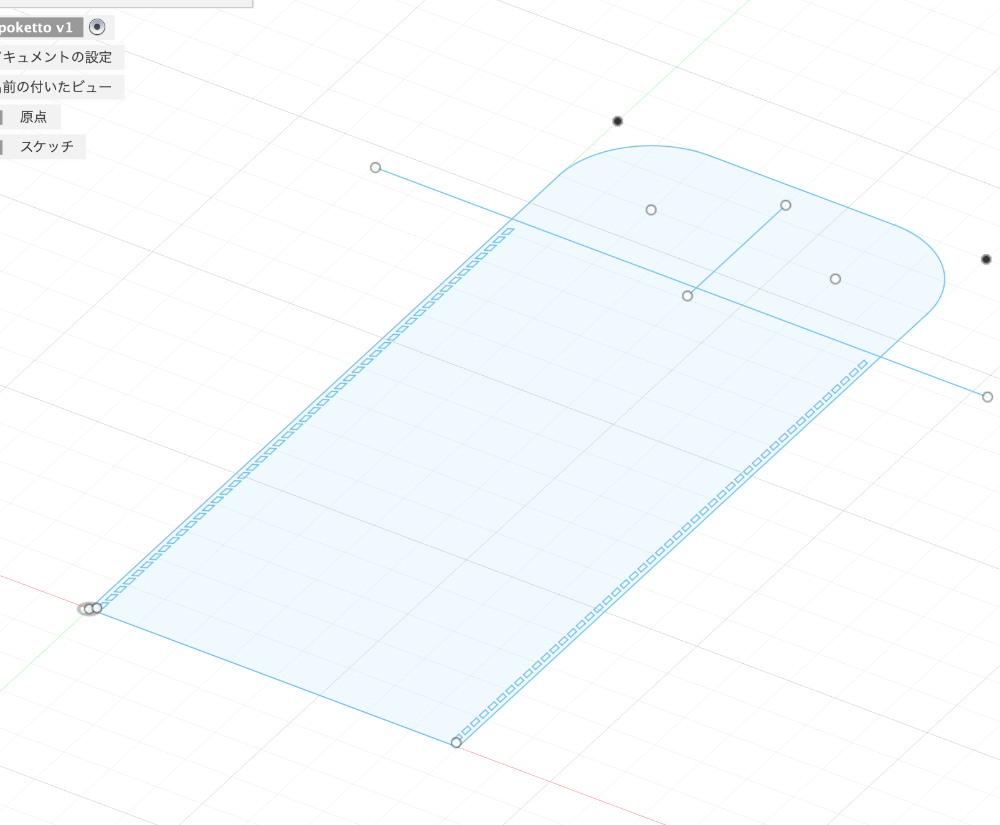
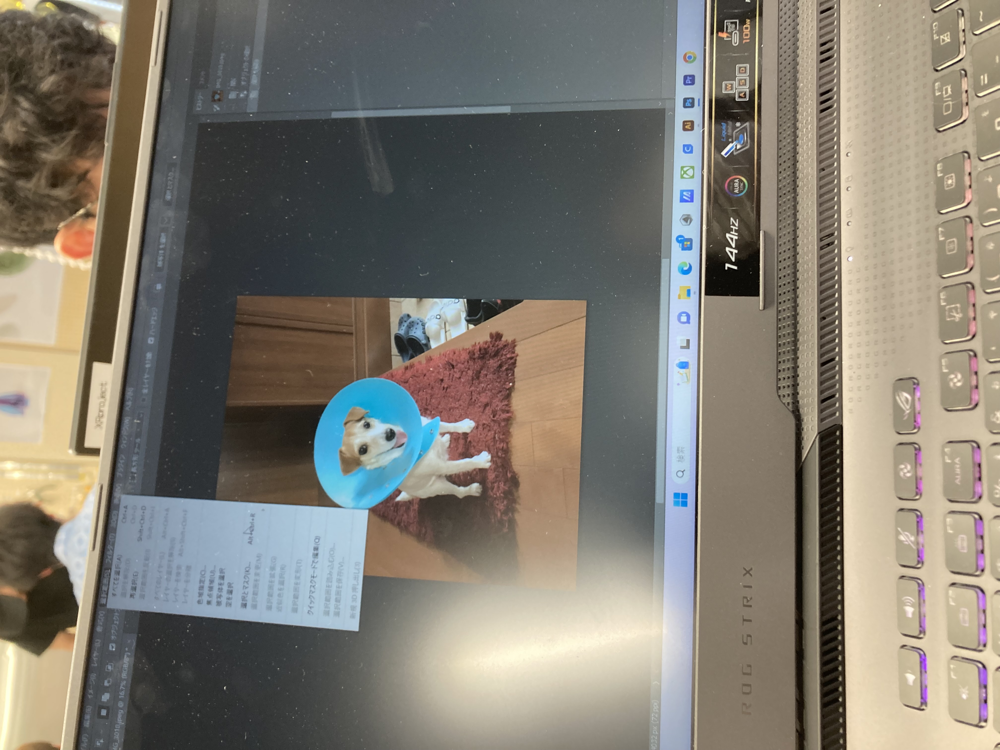
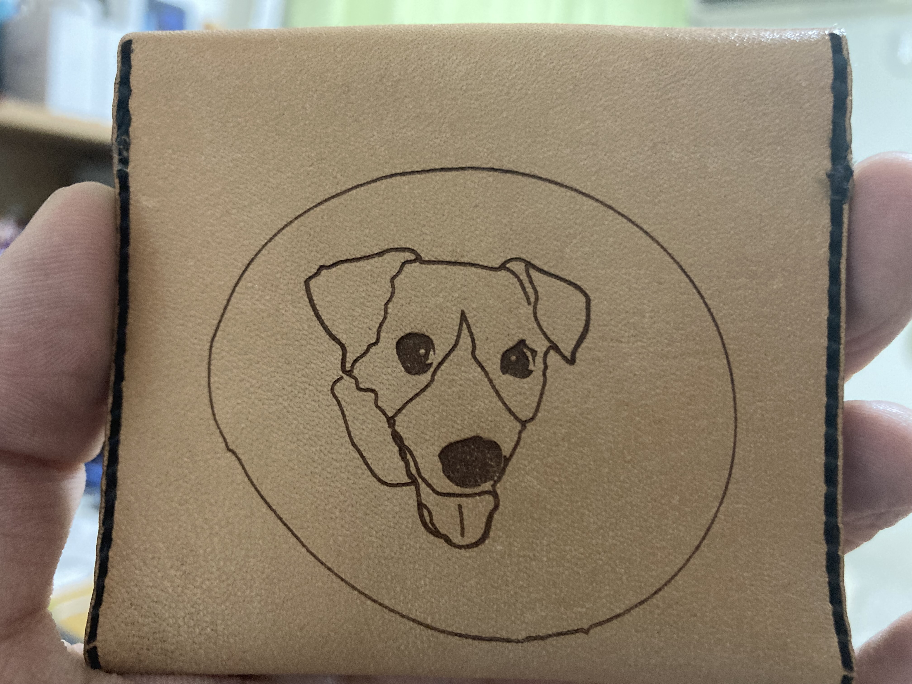

デザイン演習Ⅴ・Ⅵ
自己制作
自己制作として革細工を教えてもらおうと思い、同級生に聞いてみた。
革細工はレザークラフトというらしく、日常的に趣味として作る人が増えているようだ。
最初に皮を選んで型紙を作るのかと思ったらパソコンとレーザーカッターでできるらしい。
今回はコインケースを作る。

このようにFusionでレザーの型となるものを作る。
これだけでは味気ないので我が家のマスコットであるワンコをコインケースに入れようと思う。

この可愛い犬を入れようと思う。

adobeで犬の顔をトレースするのですが、作業がなかなかうまくいかずこの写真しかありませんでした。
顔のパーツだけトレースするのは難しく、目だけトレースしてしまったり、鼻だけなど四苦八苦しました。
レーザーを使う際には出力に注意しなければならない

間違えると、、、

焦げてしまう
うまくいくと下の完成品のように印字され立派なワンコが出てきました。
今回興味本位でやらしてもらったレザークラフトなのですが、ただ革を切って縫い合わせるだけでなく、
革をヤスリで削って切れ目をキレイにしたり。裏地を鞣したりもしました。このような革本体だけでなく糸の通し方にもコツがあり、針を二つ使い同じところに通してから同じ穴を交互に通していきます。レザークラフトには独自のやり方や、やらなければいけないことがあり今までにやったことないことばかりでとても勉強になりました。

完成品